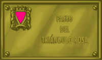

Espacios para la
diversidad
Magnus Hirschfeld y los triángulos rosas
Terror nazi contra los gais
Cuando en 1871 se redactó el nuevo código penal alemán, tras la unificación del país, las relaciones sexuales entre hombres quedaron castigadas con prisión (artículo 175). Se imponía así una visión conservadora del código de Prusia sobre el de las legislaciones más avanzadas, como Baviera o Hannover que, en 1813 y 1840 respectivamente, habían despenalizado la homosexualidad, siguiendo la influencia de la Ilustración francesa y del código penal napoleónico.
 En este contexto, se comienzan a levantar voces discordantes con esta legislación punitiva hacia los gais, entre las que destaca la de Magnus Hirschfeld (1868-1935), quien puso en funcionamiento el Comité Científico y Humanitario (1897), entre cuyos objetivos estaba el análisis científico de la homosexualidad y la abrogación del código 175. La labor de Magnus Hirschfeld logró que los socialdemócratas hicieran una petición al Parlamento alemán en 1898 para que el artículo en cuestión quedara abrogado, que no tuvo éxito. Más adelante logró también el apoyo de los comunistas y en 1929 un comité parlamentario especial recomendaba la abolición del artículo en cuestión. No tuvo éxito, a pesar del amplio respaldo que tuvo esta petición por parte de importantes científicos, artistas y escritores alemanes (entre otros Albert Eisntein).
En este contexto, se comienzan a levantar voces discordantes con esta legislación punitiva hacia los gais, entre las que destaca la de Magnus Hirschfeld (1868-1935), quien puso en funcionamiento el Comité Científico y Humanitario (1897), entre cuyos objetivos estaba el análisis científico de la homosexualidad y la abrogación del código 175. La labor de Magnus Hirschfeld logró que los socialdemócratas hicieran una petición al Parlamento alemán en 1898 para que el artículo en cuestión quedara abrogado, que no tuvo éxito. Más adelante logró también el apoyo de los comunistas y en 1929 un comité parlamentario especial recomendaba la abolición del artículo en cuestión. No tuvo éxito, a pesar del amplio respaldo que tuvo esta petición por parte de importantes científicos, artistas y escritores alemanes (entre otros Albert Eisntein).
La amplia mayoría que los nazis obtuvieron ese año en las elecciones imposibilitó cualquier reforma del Código. Cuando finalmente Hitler llega al poder en 1933, la persecución sobre los gais se intensificó. En la propaganda nazi los homosexuales se presentan como responsables tanto de la decadencia moral que a su juicio vivía Alemania como del desastre económico de la República de Weimer.
El 6 de mayo de 1933, los nazis destruyen e incendian el prestigioso Instituto de Investigaciones Sexuales, otra creación de Magnus Hirschfeld (quien logró exiliarse en Francia, donde murió), desapareciendo así el más importante archivo y biblioteca de temática GLBT del mundo. La persecución hacia los gais se intensifica en toda Alemania, en especial tras la eliminación de Ernest Röhm y su camarilla de camisas pardas en la "Noche de los cuchillos largos" (precisamente el 28 de junio de 1934), quienes fueron presentados más tarde como unos "cerdos homosexuales". Al año siguiente -otra vez el 28 de junio- se modifica el artículo 175 para endurecer las penas contra los gais.
Paulatinamente los nazis establecen una campaña sistemática de represión, sin precedentes en la Historia, contra quienes consideran sus enemigos e internan en campos de concentración y exterminio: Gais, además de los judíos, gitanos y antifascistas. En estos campos, de los que son tristemente famosos Auschwitz, Mauthausen o Treblinka, los gais fueron obligados a llevar un triángulo rosa, como distintivo en sus trajes de presos, y una vida miserable, pues en general a la homofobia de los propios nazis se sumaba, en no pocas ocasiones, la de los demás internos. Además, al finalizar la guerra no hubo ningún resarcimiento para ellos, pues la homosexualidad seguía penalizada en la mayor parte de los países liberados del yugo nazi.
Magnus Hirschfeld puso las bases de un discurso nuevo hacia la homosexualidad, pero le tocó vivir una época turbulenta y sus importantes aportaciones científicas fueron silenciadas durante años. Su nombre, al igual que el de Triángulo rosa, puestos en las placas que dan nombre a cualquier espacio público de nuestros pueblos o ciudades, además de un homenaje hacia quienes sufrieron la brutalidad y sinrazón nazis, deben ser un elemento de reivindicación de la diversidad y la tolerancia, frente a unas actitudes de odio y barbarie que no deben tener cabida en nuestra sociedad jamás.